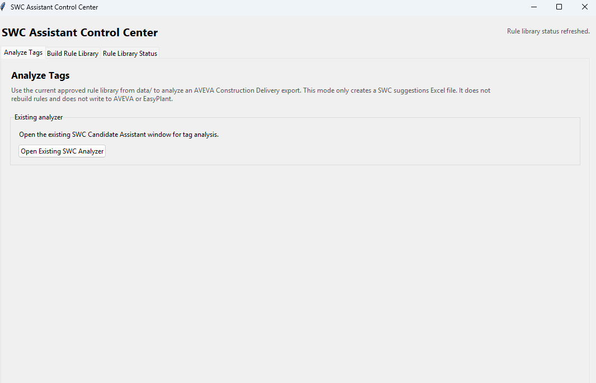
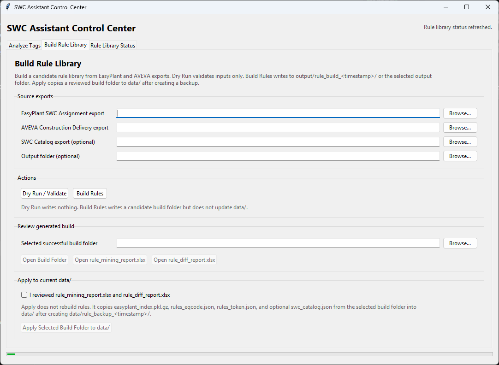

A controlled review layer that helps engineers check how tags should map to SubWorkClass bundles before downstream construction, progress, and reporting workflows depend on that data.

The SWC reference index is built from approved EasyPlant assignment data and is separate from the broader 700K+ project tag environment.
SubWorkClass assignment affects construction scope, progress measurement, subcontractor packaging, and reporting. When assignment gaps or inconsistencies appear, they can create downstream ambiguity across construction/progress systems, reporting, and review workflows.
The assistant turns a manual consistency check into a structured review package: candidate SWC bundle, evidence source, confidence band, explanation, and project context for each tag.
The workflow is built around the practical logic of engineering tag data: discipline and category codes, equipment-code patterns, WorkClass/SubWorkClass structure, GWBS/FWBS context, subcontractor scope, handover area, and downstream construction/progress system requirements. The goal is to make tag-to-SWC review traceable before construction, progress, reporting, or handover-related workflows depend on the data.
Uses tag format, category, equipment code, and parsed token patterns to understand the tag's engineering context.
Connects equipment-family patterns to WorkClass/SubWorkClass logic and downstream progress structures.
Frames SWC assignment as part of the engineering-to-construction-to-commissioning data flow, not as an isolated spreadsheet task.
Keeps lower-evidence records as manual-review candidates instead of automatic decisions.
The tool uses transparent matching logic rather than a black-box model. Lower-confidence records are kept as review candidates, not automatic decisions.
Finds tags that already have an approved SWC assignment in the EasyPlant reference index.
Uses dominant Category x EquipmentCode patterns mined from existing assignments.
Uses recurring tag string patterns where equipment metadata is incomplete.
Parses tag structure and creates manual-review candidates when direct evidence is limited.

The workflow produces review-ready Excel outputs for engineer approval, while source systems remain the authoritative data record.
Practical understanding of tagging philosophy, equipment hierarchy, data lineage, source-system authority, and the need for traceable review before project data is used downstream.
Suggested SWC bundle, confidence band, evidence layer, and explanation.
Rule source, parsed tag components, alternatives, and review notes where needed.
Contract, PSM subcontractor, handover area, discipline, equipment class, and warnings.